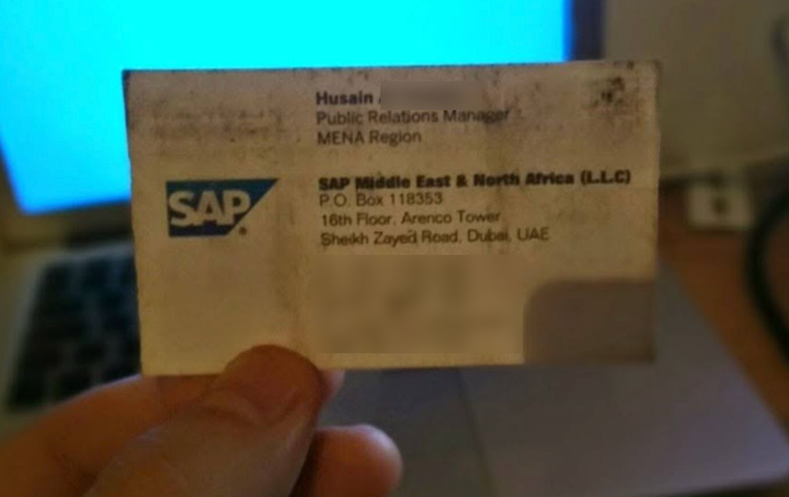

An SAP manager bought hand cream off me in a Berlin mall, and that is why I write code
In 2013 I worked a Dead Sea cosmetics cart in a Berlin shopping mall. A man stopped, listened, bought 400 euro of product, and then instead of leaving he handed me his business card and told me I was in the wrong job. I did exactly half of what he said. It took thirteen years for anyone to ask me for the other half.
The cart
A cart is not a shop. A shop has a door, and a person who walks through it has already decided something. A cart sits in the middle of the walkway and has about four seconds to stop a stranger who came to the mall for shoes.
Full time, Alexa mall at Alexanderplatz. Stop someone mid-stride, take their hand, buff a patch of nail, hand them a mirror, and sell them a skincare set they did not leave the house intending to buy. It is hard work, it is not a prestigious job, and it is a better sales education than anything I have paid for since.
Husain
He stopped. He listened all the way through, which almost nobody does. He bought 400 euro of product, which almost nobody does either. And then he stayed at the cart and said something close to this - I am reconstructing the wording thirteen years later, so the phrasing is mine and the content is his:
"You are selling me hand cream with the same energy people sell a million-euro SAP deal with. You are in the wrong place. Go and do sales in tech."
Then he gave me his card. Public Relations Manager, MENA Region, SAP Middle East & North Africa, Sheikh Zayed Road, Dubai.

An Israeli working a cart in Berlin, a manager from Dubai, in 2013. That is seven years before anyone signed anything, and it was the best conversation I had that year. He was not being kind to me. He was telling me I was wasting the skill on a tube of hand cream.
I took exactly half the advice
I went home and signed up to study, specifically so I could get into tech sales. Somewhere in the first weeks I fell in love with writing code and never came out. I never did the sales part. Not once.
The card stayed in my wallet for years, through the studying and into the first jobs, until I started at Siemens and quietly stopped thinking of myself as a person who sells anything. A decade of writing code with my head down. The engineering half of Husain's advice paid every bill I had. The other half I deleted.
Going freelance is where the missing half turns up
As an employee, someone else finds the client, agrees the scope, argues the price and chases the invoice. You get a ticket. When you go out on your own, all of that lands on the same Tuesday, and none of it is in the job you trained for.
What I found is that I had not lost the cart skills. I had filed them under "a job I used to do" instead of under "how selling works". They are the same skills, and they transfer almost line for line.
1. Open with a question, not with the product
Nobody in a mall stops for "Dead Sea cosmetics". They stop for "can I ask you something?" - because a question is cheap to answer and a pitch is expensive to escape.
Nobody stops for "I build AI automations" either. It is the same mistake in a nicer outfit: it names my product instead of their problem. "What is the thing your team redoes by hand every week?" gets an answer. Every time.
2. Demo on their hand, not on yours
At the cart I rubbed the cream into their skin, never mine. On my hand it is just cream. On theirs it is a before and an after, on the specific patch of skin they are already unhappy about.
The software version: a demo on their data, their messy export, their annoying process - not the polished demo I built at home where everything is clean and nothing fails. The polished demo proves I can build. Their data proves it works on the thing they hate.
3. The close is not the pitch, it is the four seconds before it
On a cart you learn very fast that the sale is decided at the stop, not at the price. If they stopped for the right reason, the price conversation is short. If they stopped to be polite, no discount saves it. Thirteen years later I watch the same thing happen on a discovery call.
Why any of this came back this week
A founder I had not met before is trying to recruit me to do go-to-market for his company. They are still in stealth, building an opinionated harness that helps semi-technical companies run their own internal innovation. He does not want me for the code. He wants me for the part I skipped.
Halfway through explaining to him why I am not a salesperson, I heard myself describing the cart. In detail. Thirteen years and the same head.
Then he did the thing this whole page is about. Instead of walking me through what his product does, he pointed the product at me and had it build an entire site about me while we were talking, in one shot. The headline it picked was "How Husain from SAP turned Gal Tidhar into a programmer". It also spelled my surname wrong.
What I would tell 2013 me
That the two halves are not in tension. The industry sorts people into "technical" and "commercial" on day one and most of us accept the label we are handed. I accepted mine for a decade because the technical half was so much more fun, and because "I was good at selling" sounded like something to grow out of, not something to keep.
It was not a detour. It was the half of the job nobody was going to teach me later.
What I do now
I build AI-native automation for small and mid-sized businesses through ZaZet Solutions - the kind of work where the first conversation is still a question, not a pitch.